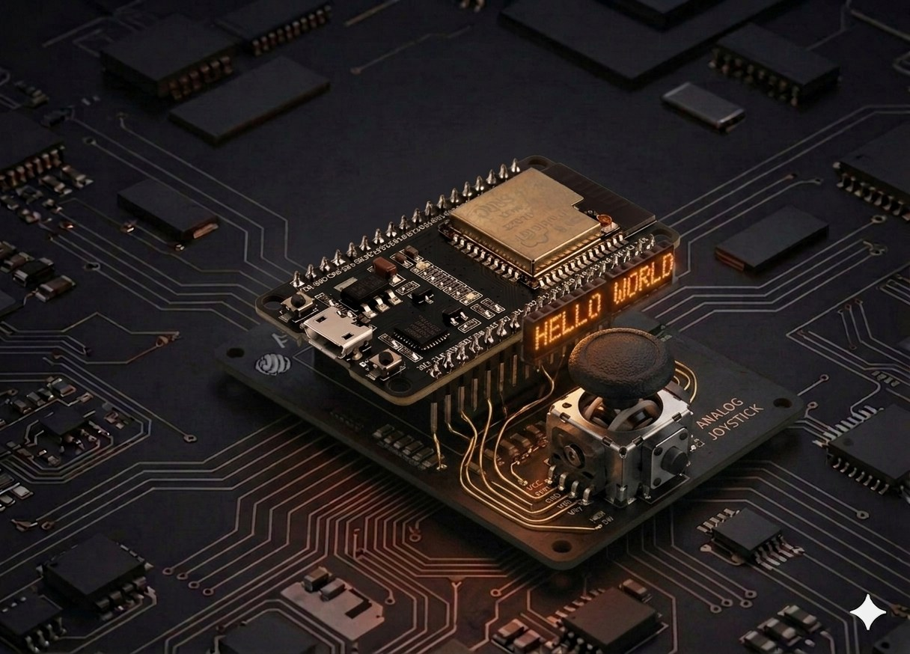

Joystick
Read the X and Y axes of an analog joystick plus its push button from the ESP32 — the base for remotes, games, and steering.
Joystick¶
An analog joystick is really two potentiometers (one per X axis, one per Y) plus a button that closes when you press down on the stick. Here we read it from the ESP32 in MicroPython and use the values to decide direction — the foundation for any simple remote or game.

Description¶
The ESP32 has a 12-bit ADC — read() returns values between 0 and 4095. The rest position (stick centered) sits around 2048. For each axis we map the value to a decision: "center" / "left" / "right" / "up" / "down".
Two details on the ESP32 that differ from Arduino:
- ADC2 is unavailable while Wi-Fi is active. Stick to ADC1 (GPIO 32–39). Here we use GPIO 34 and GPIO 35 — input-only ADC1 pins.
- Attenuation shapes the input voltage range. By default the ADC tops out around 1.1 V; setting
ADC.ATTN_11DBextends it to ~0–3.3 V — exactly right for a joystick powered at 3.3 V.
Components¶
| Component | Quantity |
|---|---|
| ESP32 board (DevKit V1) | 1 |
| Analog joystick module (KY-023 or similar) | 1 |
| F-M jumper wires | 5 |
Wiring¶
| Module pin | ESP32 | Notes |
|---|---|---|
| GND | GND | shared ground |
| +5V (or VCC) | 3.3V | the joystick is perfectly happy at 3.3 V |
| VRx | GPIO 34 | X axis, ADC1 |
| VRy | GPIO 35 | Y axis, ADC1 |
| SW | GPIO 32 | button, internal pull-up |
ESP32 Joystick
3.3V ──────────── +5V / VCC
GND ───────────── GND
GPIO 34 ─────────── VRx (X axis)
GPIO 35 ─────────── VRy (Y axis)
GPIO 32 ─────────── SW (button, active LOW)
Why 3.3 V and not 5 V
ESP32 GPIOs are not 5 V tolerant. If you power the module at 5 V, the axes can swing above 3.3 V and damage the ADC. At 3.3 V the joystick delivers exactly the 0–3.3 V range — perfect for the ADC.
Pins to avoid
GPIO 34–39 are input-only (no internal pull-up/down, no output) — ideal for analog axes. For the button we use GPIO 32 which does have an internal pull-up.
Code¶
from machine import Pin, ADC
import time
# --- Setup ---
vrx = ADC(Pin(34))
vry = ADC(Pin(35))
vrx.atten(ADC.ATTN_11DB) # full 0-3.3 V range
vry.atten(ADC.ATTN_11DB)
button = Pin(32, Pin.IN, Pin.PULL_UP) # active LOW: 0 = pressed
# Dead-zone thresholds (center ~2048, ±35%)
DEAD_LOW = 1300
DEAD_HIGH = 2800
def read_direction():
"""Return 'STOP' / 'LEFT' / 'RIGHT' / 'UP' / 'DOWN'."""
x = vrx.read()
y = vry.read()
x_out = x < DEAD_LOW or x > DEAD_HIGH
y_out = y < DEAD_LOW or y > DEAD_HIGH
if not x_out and not y_out:
return "STOP", x, y
# The axis with the larger deflection from center wins
dx = x - 2048
dy = y - 2048
if abs(dx) >= abs(dy):
return ("LEFT" if x < DEAD_LOW else "RIGHT"), x, y
else:
return ("UP" if y < DEAD_LOW else "DOWN"), x, y
print("Move the stick. Ctrl+C to stop.\n")
last_dir = None
while True:
direction, x, y = read_direction()
pressed = button.value() == 0 # 0 = pressed
# Only print when the direction or the button changes
if direction != last_dir or pressed:
print(f"X={x:4d} Y={y:4d} → {direction}{' [BTN]' if pressed else ''}")
last_dir = direction
time.sleep_ms(50)
Run the script¶
- Plug the ESP32 into USB.
- In Thonny paste the code and press Run (F5) — no need to save it to the board to test.
- Move the stick in all four directions. You'll see something like:
Move the stick. Ctrl+C to stop.
X=2032 Y=2061 → STOP
X= 158 Y=2052 → LEFT
X=4093 Y=2048 → RIGHT
X=2050 Y= 82 → UP [BTN]
X=2048 Y=4061 → DOWN
Actual center values vary per unit (490–530 is normal on Arduino, which maps to 1900–2150 on the ESP32's 12-bit ADC).
Quick calibration¶
If on your board the rest position falls outside the dead zone, read the real values and tweak:
# Hold the stick centered and read 10 samples
samples_x = [vrx.read() for _ in range(10)]
samples_y = [vry.read() for _ in range(10)]
center_x = sum(samples_x) // 10
center_y = sum(samples_y) // 10
print("Center:", center_x, center_y)
# Then set DEAD_LOW and DEAD_HIGH around those values.
Example: map to −100 … +100¶
Useful for games or proportional speed:
def normalize(value):
"""0..4095 → -100..+100, with a dead zone around the center."""
if DEAD_LOW <= value <= DEAD_HIGH:
return 0
if value < DEAD_LOW:
return -((DEAD_LOW - value) * 100) // DEAD_LOW
return ((value - DEAD_HIGH) * 100) // (4095 - DEAD_HIGH)
while True:
nx = normalize(vrx.read())
ny = normalize(vry.read())
print(f"X={nx:+4d} Y={ny:+4d}")
time.sleep_ms(100)
Troubleshooting¶
X / Y values swing wildly even when the stick is still
- Normal ADC noise on the ESP32. Average several samples:
- Make sure the module is powered from 3.3V, not a flaky USB rail.
- If you run Wi-Fi code in parallel, don't use ADC2 — stay on GPIO 32–39.
The button is stuck pressed or released all the time
- Does your module have an external pull-up? Then drop
Pin.PULL_UPfrom the code:Pin(32, Pin.IN). - If it never changes, check the SW wire — on some modules it's labeled "BTN" or "K".
An axis feels inverted
- Rotate the module physically, or in software replace
xwith4095 - x(same fory).
OSError: invalid pin on ADC(Pin(...))
- The pin doesn't support ADC, or it's on ADC2 while Wi-Fi is active. Use 34, 35, 36, 39 (ADC1, input-only) or 32, 33 (ADC1, input/output).
Extension ideas¶
- Axis-driven servo: map the X axis to
set_angle(0..180)from the Servo project. - RGB LED with joystick: X drives red, Y drives blue, the button toggles green — combine with the RGB LED.
- Wireless remote: send (direction, button) over ESP-NOW to a second board. For a full Wi-Fi remote example, see Robot Car Remote.
- Snake on an LCD: the axes steer a snake rendered on a 16×2 I2C LCD.